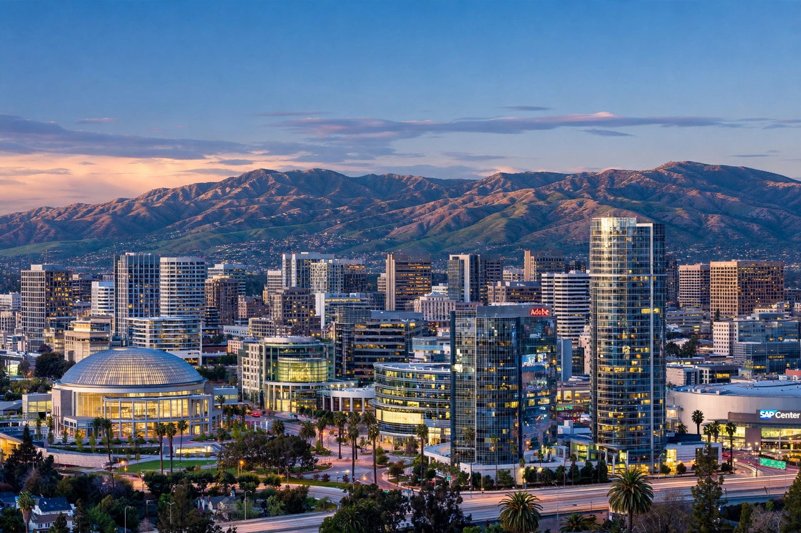

From Wikipedia, the free encyclopedia
| San Jose | |
|---|---|
 Downtown San Jose | |
| State | California |
| County | Santa Clara |
| Founded | 29 November 1777 (as El Pueblo de San José de Guadalupe) |
| Population | ~1.0 million (most populous city in Northern California; third in California) |
| Area | ~466 km² (180 sq mi) |
| Nickname | "Capital of Silicon Valley" |
| Airport | San Jose International Airport (SJC) |
San Jose, officially the City of San José, is the largest city in Northern California by both population and area, and the county seat of Santa Clara County. With a population of roughly one million, it is the third-most populous city in California and lies at the southern end of San Francisco Bay, in the heart of Silicon Valley. It is the largest city of the San Jose–Sunnyvale–Santa Clara metropolitan statistical area.
San Jose was founded on 29 November 1777 as El Pueblo de San José de Guadalupe, the first civilian town in Spanish Alta California, to supply food to the presidios of Monterey and San Francisco. After the Mexican–American War it became briefly the first capital of the new state of California (1849–1851). For more than a century the city was the centre of a rich agricultural region — the "Valley of Heart's Delight" — famous for orchards and canneries. After the Second World War, and especially from the 1970s, agriculture gave way to suburban growth and the semiconductor and computer industries that define the region today.
San Jose is home to major technology employers and headquarters including Adobe, Cisco Systems (in north San Jose), eBay, PayPal, Zoom and Samsung's North American semiconductor operations, with many other giants — Apple, Google, Meta, Nvidia — nearby in the valley. The city has one of the highest concentrations of millionaires in the United States and among the highest housing costs of any major American city. San Jose State University, founded in 1857, is the oldest public university on the West Coast. Sports teams include the NHL's San Jose Sharks, and landmarks include the Winchester Mystery House and the Tech Interactive museum.
The city occupies the Santa Clara Valley floor, ringed by the Diablo Range to the east and the Santa Cruz Mountains to the west. It enjoys a Mediterranean climate with warm, dry summers and mild, wet winters, averaging around 300 days of sunshine a year.
See also: Silicon Valley · Oakland · San Francisco · Santa Clara County